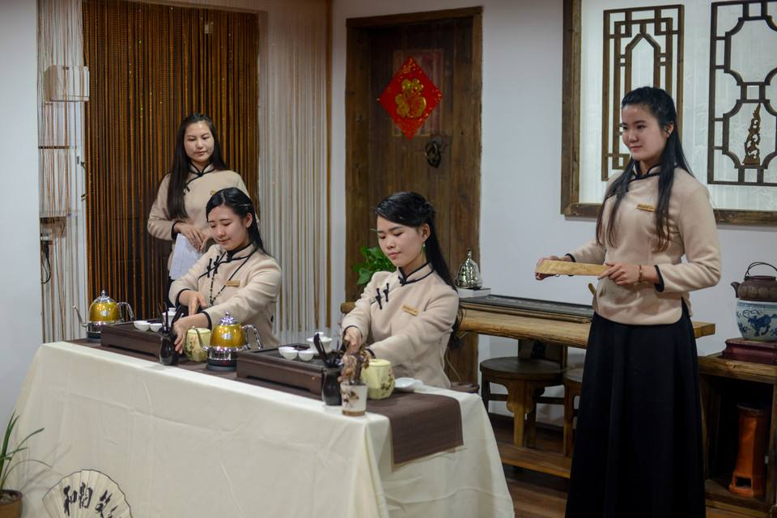
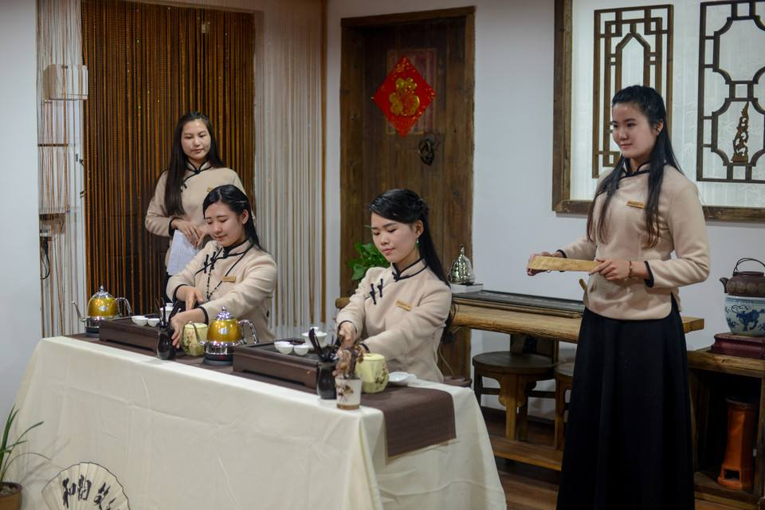

增加同学们对茶文化的了解，激起同学们对茶文化以及茶道知识的学习兴趣，丰富同学们的课余生活， 传播中华民族茶文化。同时也为决赛做准备，选择出成绩优异的同学在决赛中给大家带来精彩的表演。
淮海工学院茶艺社，成立于2017年3月，由在校大学生组织成立，挂号单位为计算机学院。 茶艺社以“学习传统精粹，弘扬茶文化”为宗旨，社团主要活动是向全校师生宣讲茶知识，宣传茶文化， 组织茶艺培训，促进茶文化交流。茶艺社目前共有成员3人，社团内部分有茶艺部，宣传部和办公室三个部门， 是一个团结有爱的大家庭。淮工茶艺社目标是继承发扬中国茶文化，提高自身的人文素质和修养，同时为学校同学 提供了解学习茶文化的平台，拓宽同学的相关知识，丰富同学们的课余生活，活跃校园文化。
增加同学们对茶文化的了解，激起同学们对茶文化以及茶道知识的学习兴趣，丰富同学们的课余生活， 传播中华民族茶文化。同时也为决赛做准备，选择出成绩优异的同学在决赛中给大家带来精彩的表演。
通过对社团内部人员的培训，帮助社团人掌握茶知识，茶道能陶冶人的情操，使人谈吐高雅，举止文雅， 丰富知识和内涵，使我们成为一个有较高生活品位的人同时传承和弘扬中国茶文化，促进传统文化的发展， 在淮工大校园里营造一抹独特的茶文化之韵。
所谓茶会，意在联络老朋友，结交新朋友，是具有对外联络和招待性质的社交性集会。通过茶会使同学们在 活动中交流经验，增进彼此之间的感情；提高生活品质，丰富同学们的文化生活；发扬并传承中国博大精深的茶文化。。
通过茶文化周，推广茶文化，发现和培养更多爱茶之人；提升我校大学生的文化修养，提高生活品质，丰富 同学们的文化生活；在当下快节奏的大环境中营造一个宁静舒缓的空间，提供给有需要的人。